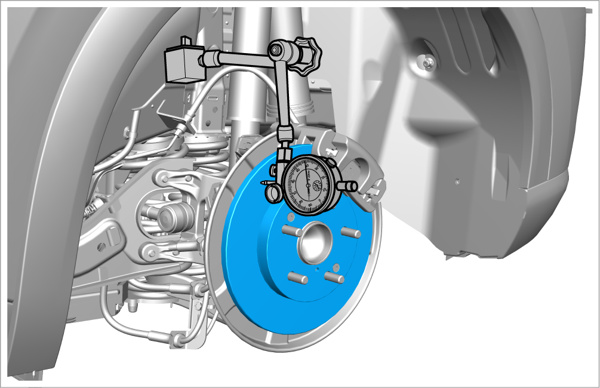
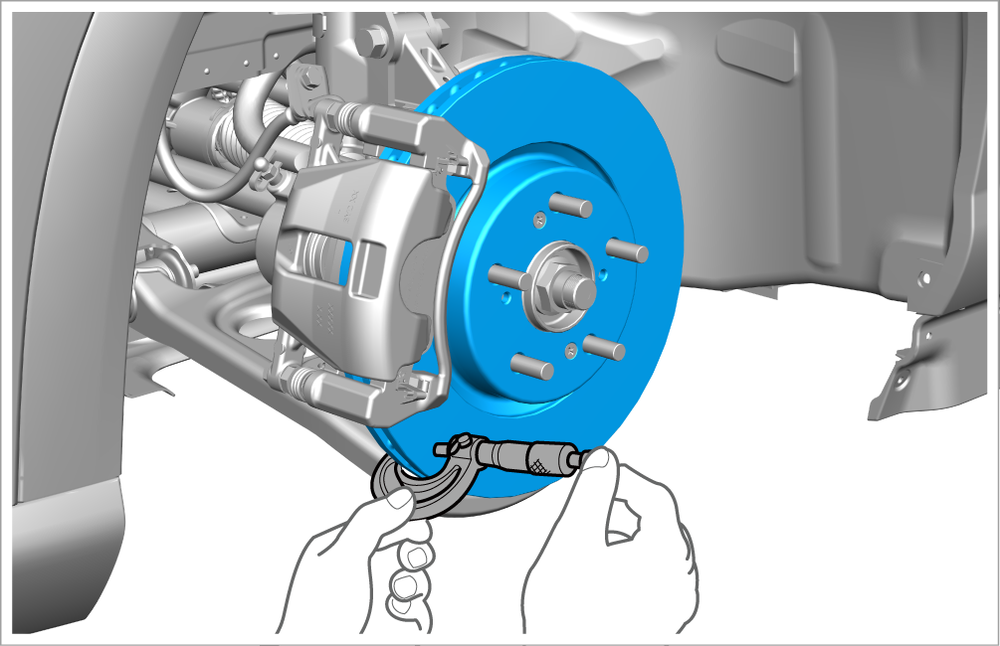

Inspection of rear brake disc
Test
-
Vibration
-
Remove the rear brake pad assembly. Refer to Removal and installation of rear brake pad assembly
-
Check the brake disc surface for damage or cracking. Thoroughly clean the brake disc and remove all rust.
-
Install appropriate flat washers and wheel nuts. Tighten the nut to the specified torque.
-
Tightening torque: 120±5 N•m
-
-
Place the dial indicator against the brake disc, measure the vibration at 10 mm from the outer edge of the brake disc, and rotate the brake disc to observe the reading of the dial indicator pointer.

-
If the brake disc vibration exceeds the service limit of 0.08 mm, repair the brake disc with an on-board brake lathe.
-
Maximum service limit of rear brake disc: 7 mm
-
-
If the brake disc exceeds the service limit, replace it.
-
-
Thickness
-
Use a micrometer to measure the thickness of the brake disc at 8 points 10 mm away from the outer edge of the brake disc and at the intervals of about 45°. If the minimum measured value is less than the maximum service limit, replace the brake disc.
Thickness of front brake disc
Standard thickness
9±0.1mm
Maximum service limit
7mm
Parallelism of brake disc
Max. 0.1 mm
Caution
This is the maximum allowable deviation from the thickness measurement.

-
If the minimum measured value is less than the maximum service limit, replace the brake disc.
-
If the parallelism of the brake disc exceeds the service limit, repair the brake disc with an on-board brake lathe.
CautionIf the parallelism of the brake disc exceeds the re-service limit, replace the brake disc.
-